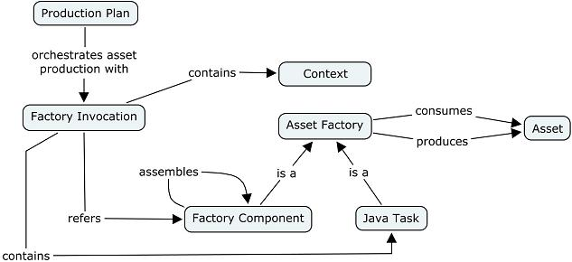
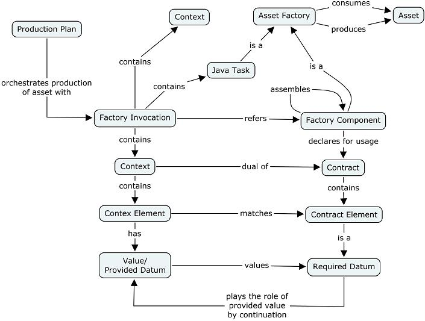

A factory invocation is a step of a production plan which invokes either a factory component or Java task. Expected parameters for the invocation are provided by the contract element of the factory component or by the context of the invocation.
Generation tailoring depends on i) the viewpoint contents, and ii) on the parameter values given to a factory component's contract. A factory component invocation meets the second point. In the context of a production plan, an invocation is an orchestration step which realizes the connection from a requester factory component to the provider factory component; the context provides values expected by the factory component's contract.

Figure 1. Global view
To generalize this definition, a factory component or java task represents a function for a factory invocation. For instance, it could be a generation function (e.g., code, model generation, a generation function specialized by patterns), or a deployment function. An invocation FCI corresponds to a function f ensured by a factory component or Java Task and a list of parameters p required by f.
FCI: f (p)
FCI is a reflective structure because f can contain a new set of FCI; n is the depth level.
FCIn: fn (pn)
Creating an factory component invocation corresponds to the creation of a new FCI function. Executing a factory component corresponds to the application of FCI (b-reduction in lambda calculus).
For an asset production with factory component, a factory invocation references a factory component. For an asset production with java task, an factory invocation contains a java task which references a java task factory. In the two cases, the factory invocation contains a context for passing parameter values. The relationship between a factory invocation and a factory component through a contract is explained in the contract section.

Figure 1. Factory Invocation structure